Where a build's questions get answered, what light review reads, what "62%" meant, and which README pictures are stale. Each ends with the call I'd make.
One ticket file has two copies while a build is out: the worker's, on its ticket branch, and the tracker's, on the parent ticket's branch. The worker's questions land in its copy; tracker rule writes into the other one.
Ruled lines from the tracker's copy); the command that writes a ruling doesn't, so it refuses.dispatch reviewRulings can be written before the merge.cost one question, two homes until the merge. Any amend round that touches a question makes the copies disagree, and something new has to reconcile them.
tracker worker wrote D1 and D2's rulings itself in its amend round, and I wrote D3's with tracker rule after the merge. The board's stitching of the two copies can go too: while a build is in review, it reads the branch's copy whole.cost an answer you give before the merge lives only in my conversation until the merge or the resume, so a crashed session loses it. An answer written as a comment on the review page survives, because diffview saves comments.
Addressed: C<n>. A ticket's ## Questions is then only for questions filed directly on the tracker's copy.cost the board's needs-me group reads questions from ticket files, so it would have to read the page's saved comments too, and board-orients just built questions into the ticket.
(B). It removes a mechanism instead of adding one: no copy step, and no stitching of two copies on the board.
/mx:code-review runs a small diff that touches no contract as light: one reviewer instead of four.
--spec: the ticket and its ancestors reach the one reviewer too.cost the one light reviewer reads a longer brief.
Let review --light take --spec.
You asked for the tracker skill cut to at least half. The skill also took in the old spec format's sections, since a ticket's body now carries them.
wc -w on master and on the prose branch. The after bar passes the first line and stops short of the second. Separately, /mx:to-tickets (1,509 words) became the tracker's SLICING.md (1,069).Accept. What stayed is the ticket body's sections, the model you chose; cutting further deletes rules, not repetition.
readme-reshootreadme-reshoot is an open ticket to re-shoot the README's board screenshots once the board's edits are done, and to compress every PNG. The README's text now describes one kind of ticket; these pictures still draw the old model.
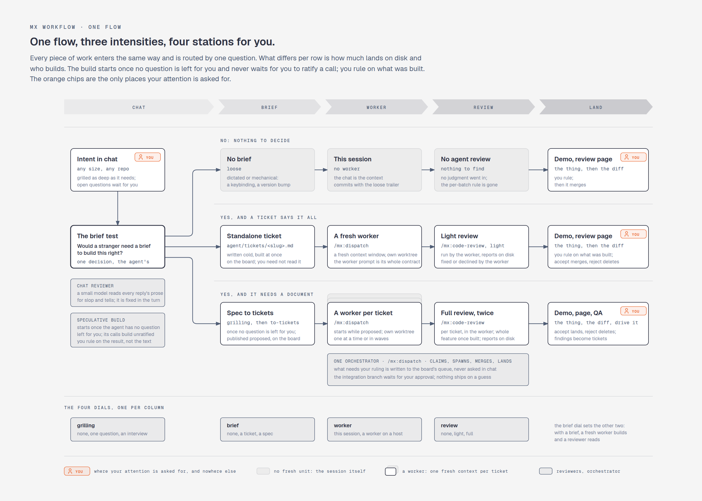
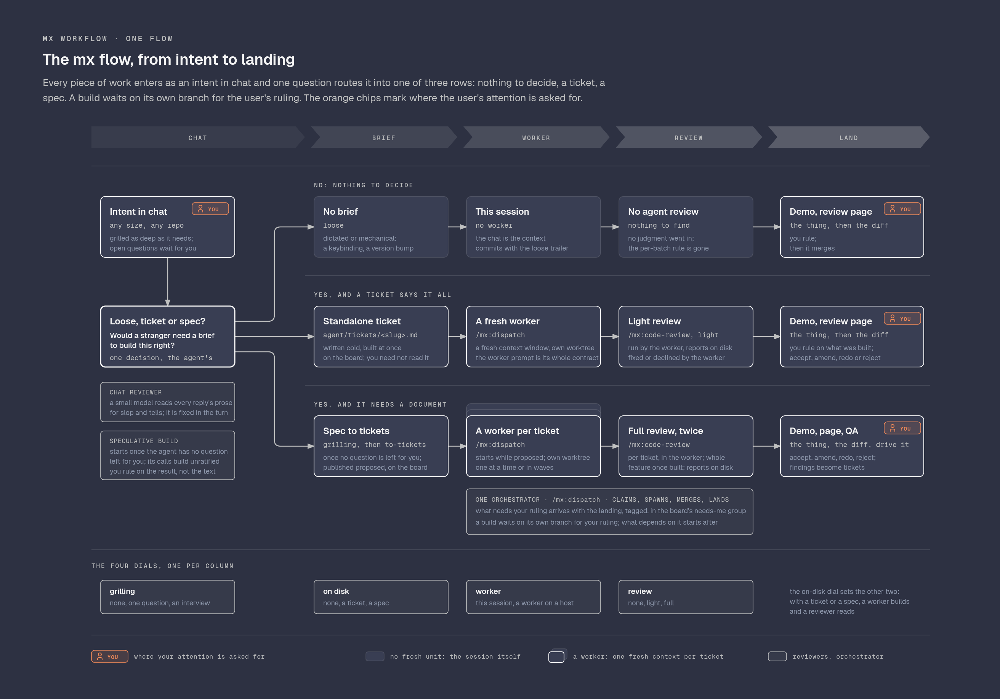
Routes intents by asking "loose, ticket or spec?", with rows for a standalone ticket and a spec cut into tickets.
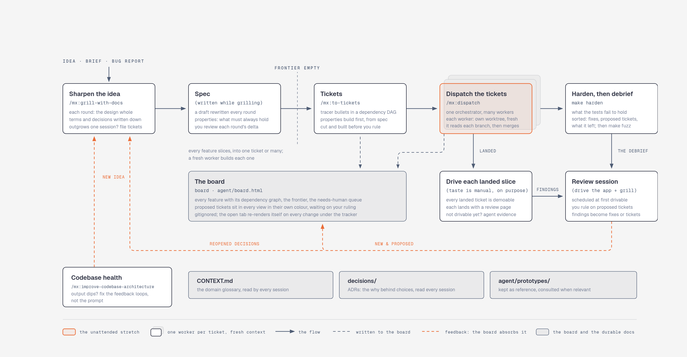
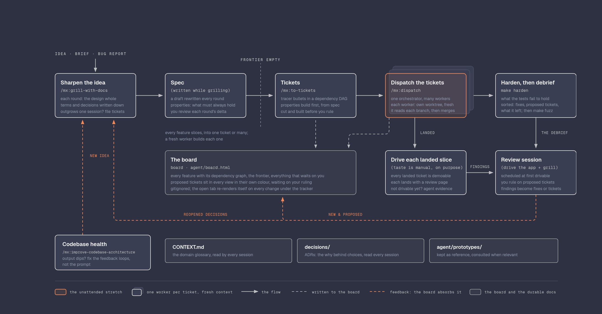
A Spec box and a /mx:to-tickets box; the board shows "every feature".
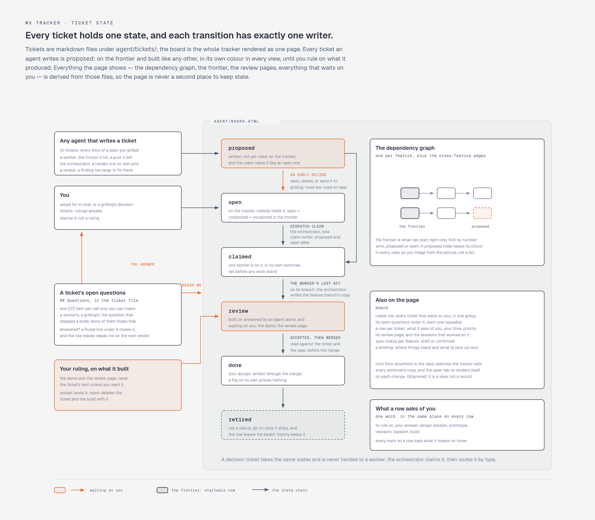
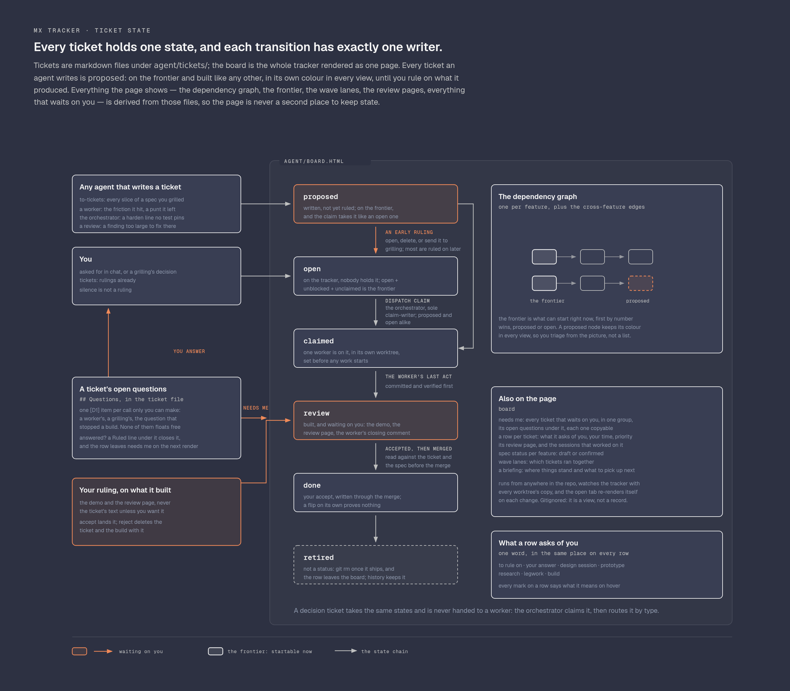
A graph per feature, spec status per feature, and decision tickets routed by type (research, legwork).
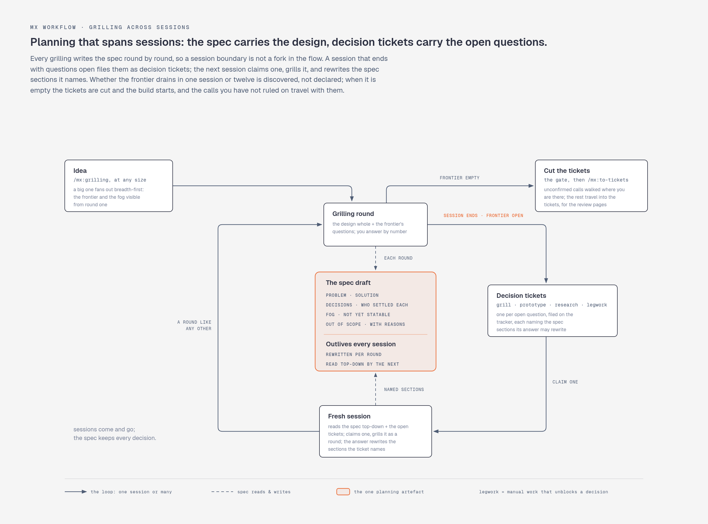
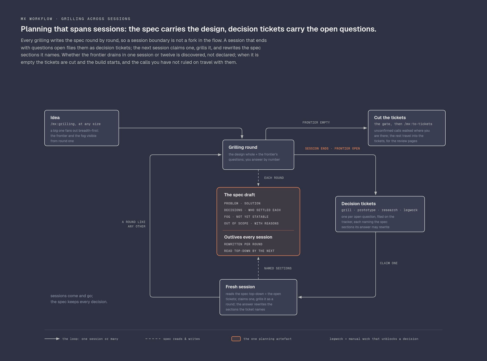
The whole figure is the old model: a spec draft plus four types of decision ticket.
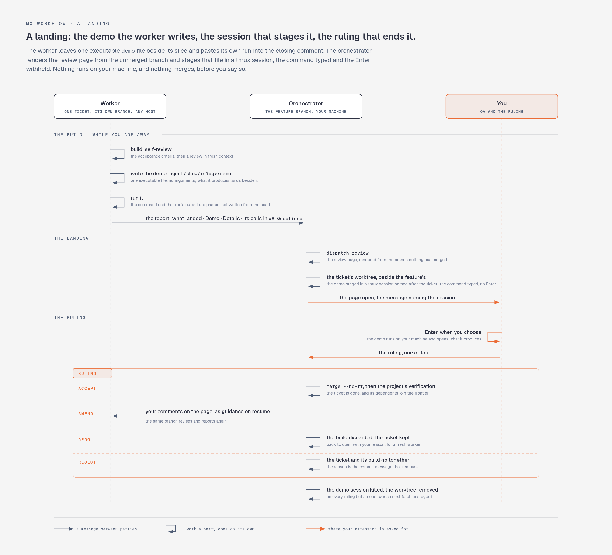
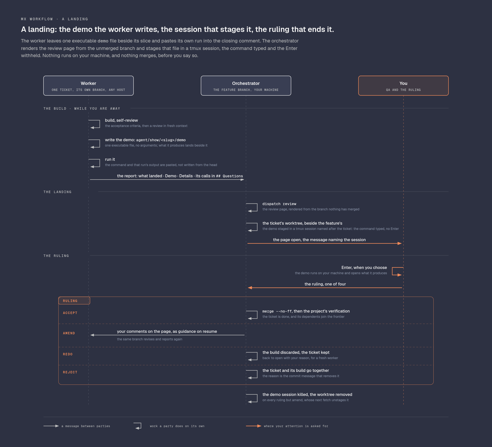
The demo path agent/show/<feature>/NN-<slug>/demo and "the feature branch".
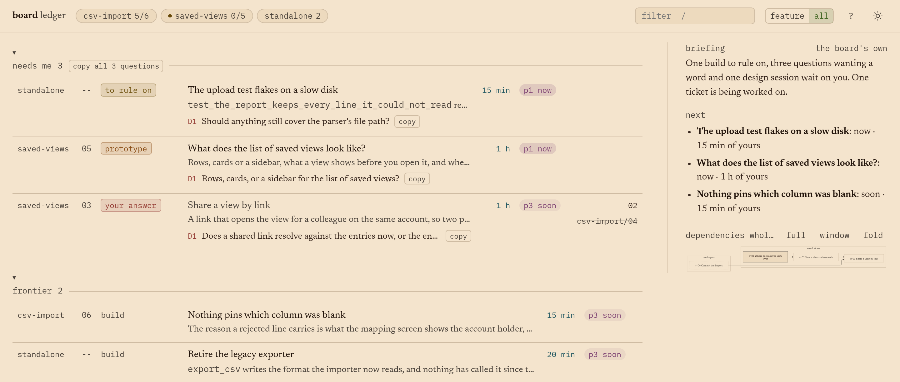
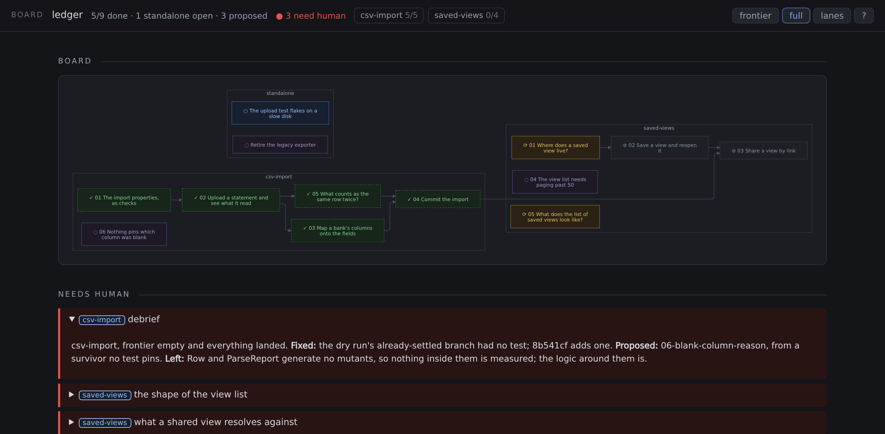
Screenshots of the board grouped by feature, with feature chips; the board now groups by top-level ticket.
Fold redrawing these into readme-reshoot, which becomes "bring the README's pictures up to date".